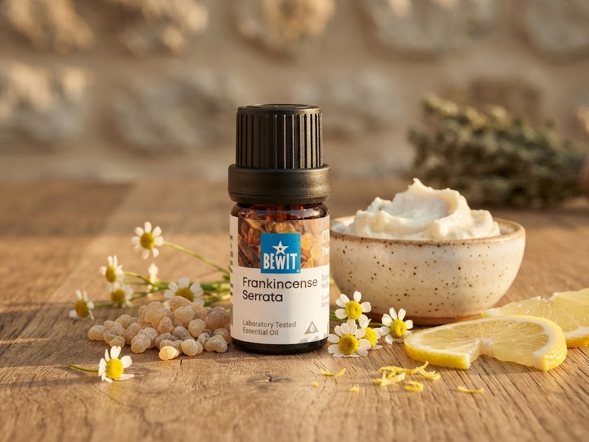

🌿 Lekce 18
esence a recepty pro krásnou pleť
Ukážu vám, jaké esenciální a nosné oleje vybrat podle typu pleti, a šest receptů, které si snadno uděláte doma.

Tady najdete pár tipů, jak si vyrobit vlastní šlehané tělové máslo, luxusní přírodní peeling nebo pleťovou kosmetiku šitou na míru vaší pleti.
Suchá pleť: GOLD Moisturising, Levandule.
Mastná pleť: GOLD Balance Oily, Rozmarýn.
Citlivá pleť: GOLD Sensitive, Levandule.
Akné: GOLD Lavender, Tea Tree.
Podrážděná, červená nebo osypaná pokožka: GOLD Lavender, Heřmánek.
Pigmentace pokožky: Kadidlo, Ylang-Ylang.
Sjednocený tón pleti: Geránie, Mandarinka.
Celulitida: GOLD AN-CELL.
Drobná poranění, odřeniny: GOLD Lavender, Tea Tree.
Tohle je jen pár osvědčených tipů na začátek — kompletní přehled všech olejů najdeš v Katalogu.
Nosným olejům jsme se podrobně věnovali v Lekci 9. Pro pleť se nejlépe osvědčily Arganový, Jojobový, Mandlový, Kokosový, Nimbový nebo BEWIT Essential Base Oil — hotová směs pro ty, kdo si nejsou jistí, kde začít.
Vlastní krém z rostlinného vosku a nosných olejů pro hebkou pleť.
Vosk, bambucké máslo a nosný olej — péče, kterou můžete i sníst.
Další lekce: Pleť s akné — pokračovat →